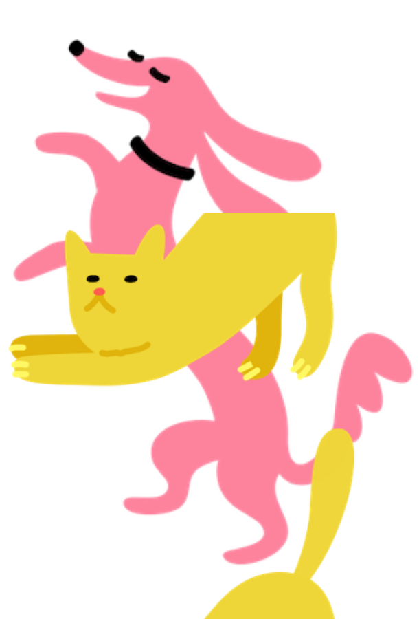

Finding Forever Homes for Dogs and Cats
Pet find is a shelter that cares about homeless pets
FIND YOUR PETAbout us
Our goal is to make shelters the first place potential adopters turn when looking to get a new pet, ensuring that all healthy and treatable pets find loving homes.
-
 545,000+
545,000+Animals Assisted
-
 34,550+
34,550+Animals Relocated
-
 43,740+
43,740+Spay/Neuter Surgeries Performed
New pets in our shelter
-
 Sunny
SunnyFemale/3 years
An awesome cat
-
 Steve
SteveMale/2 years
A friendly dog
-
 Sheldon
SheldonMale/7 years
A loyal dog

Happy pets and owners


When I found my rescue animal, I found my purpose
Let Pet Find associates be your post-adoption support network. Our specialist provides new pet parents substantial benefits with hundreds of dollars worth of coupons for everything a new pet needs. And our partners will be there today, and every day, to answer all those new pet parent questions and make sure every adoption is a successful one.
